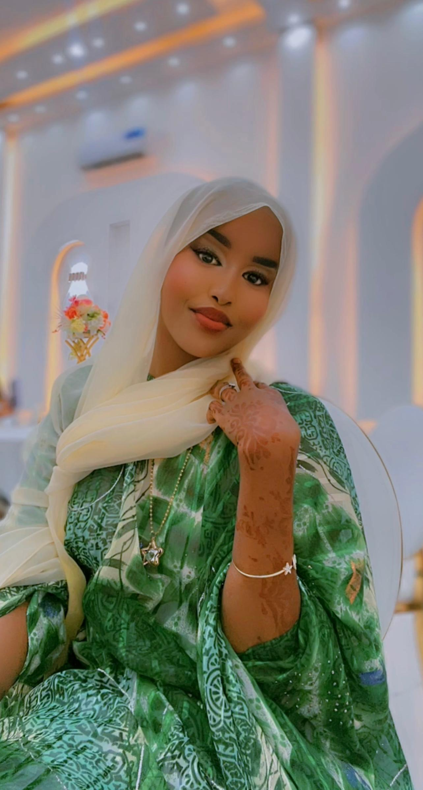
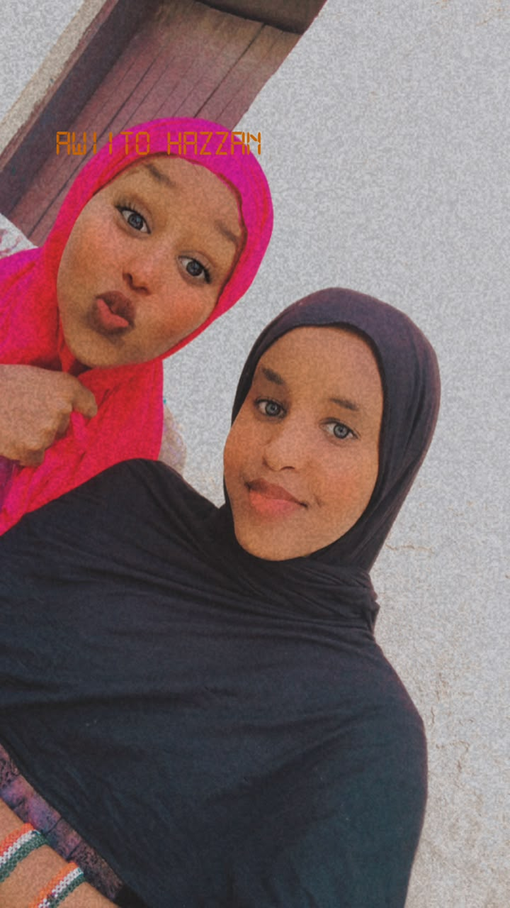

MY BEAUTIFUL SISTER
My Lovely Young Sister🌸

Quruxda, farxadda iyo shaxshaxda. ❤️
A DAY TO REMEMBER
Maalintii riyadaadu rumowday 🎓
Hal tallaabo oo maanta ah, kun fursadood oo berri ah. ✨
SISTERS FOREVER
Waxa ina dhex yaala xasuus aad u badan💕

Walaalnimo waa hadiyad qalbiga ku waaraysa. 🌷
💌
A MESSAGE FROM MY HEART
Farriin adiga kuu gaar ah
Waxaa jira ereyo aan doonayo inaad qalbigaaga ku kaydsato. Riix badhanka hoose. ❤️